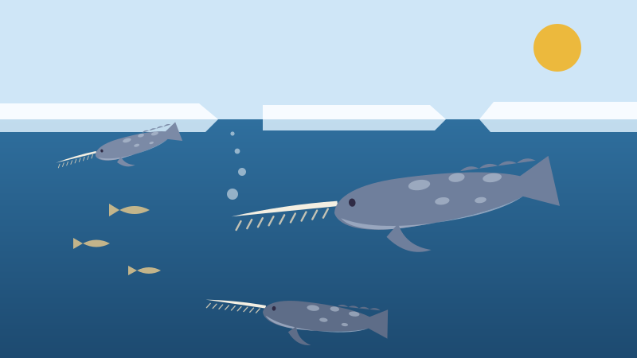
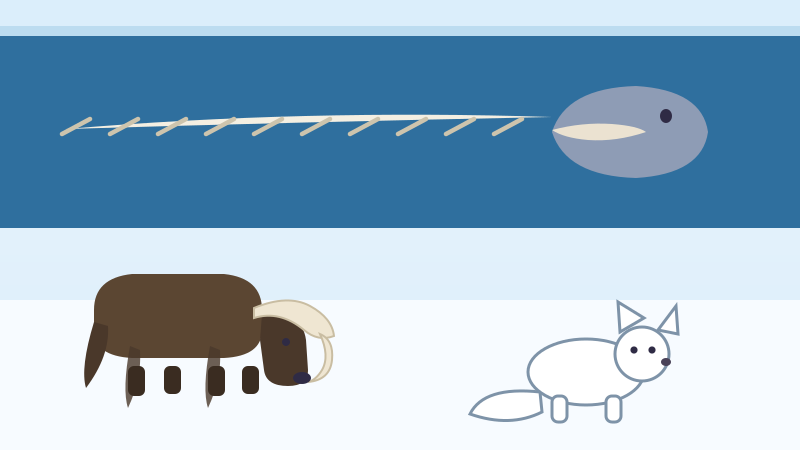

🦄 For Kids
The Narwhal Has a Tooth Instead of a Horn
For hundreds of years people paid fortunes for unicorn horns. Every one of them came off a whale.

It is a tooth
A narwhal is a whale that lives in the cold seas at the top of Canada. It has almost no teeth at all. It has two, and in a male one of them does something no other tooth on Earth does.
The upper left tooth grows straight out through the lip and keeps going, until it is a spear two to three metres long, about as long as a car. It is not a horn. It is a tooth, and it grows on the wrong side of the face.
Look closely and you will see the tusk is twisted, like a rope. It always twists the same way, to the left, on every narwhal ever measured.
Most females do not grow one. Their teeth stay hidden inside the jaw. A few females do grow a tusk, and some males grow two.
Nobody is sure what it is for
This is the honest bit, and it is the best bit. Scientists do not agree about what the tusk is for. There are three good answers and none of them has won.
The oldest idea is showing off. Only males grow big ones, and animals that grow something big and useless usually grow it to impress each other, the way a stag grows antlers.
The second idea is that it is a sensor. In 2014 scientists found the tusk is full of tiny tubes running from the outside to the nerve in the middle. They tested a living narwhal by washing salty and less salty water over its tusk, and its heartbeat changed. It may be tasting the sea.
The third idea came from a flying camera. In 2017 scientists working with Fisheries and Oceans Canada filmed narwhals from a drone in Nunavut, and saw them give quick taps with the tusk to stun an Arctic cod before eating it. Nobody had ever seen that before.
Perhaps it is all three. Perhaps it is something nobody has thought of yet. That is a real question, still open, that somebody reading this could one day answer.
Unicorns that were never unicorns
Long ago, traders brought narwhal tusks south into Europe and sold them as unicorn horns. Almost nobody in Europe had ever seen the Arctic, so almost nobody could argue.
A unicorn horn was said to be worth ten times its weight in gold. Kings and popes owned them. Queen Elizabeth the First is said to have offered a fortune for one when she heard that Mary Queen of Scots had one.
It ended in 1638, when a Danish scientist named Ole Worm put a whole narwhal skull on a table and showed everyone where the horns really came from.
In Inuktitut the narwhal is called tuugaalik, which means the one with a tusk. The people who had always lived beside them never needed a legend. They already knew what it was.

Living under the ice
Narwhals are Canadian in a way few animals are. In summer, most of the narwhals on the planet are in Canadian Arctic water: Lancaster Sound, Admiralty Inlet, Eclipse Sound, Prince Regent Inlet, all in Nunavut. In 2013 a survey counted about 142,000 of them in the eastern High Arctic alone.
In winter they go out under the pack ice of Baffin Bay and stay there for up to seven months, in the dark, under a lid of ice, swimming from breathing hole to breathing hole.
They dive more than 1,500 metres down, deeper than a mile, and hold their breath for about 25 minutes. Down there it is completely black and the water squeezes hard.
Canada lists the narwhal as a species of special concern, which means it is not in trouble yet but somebody is watching carefully. Its whole life depends on sea ice, and sea ice is changing.
Two neighbours on the land
Up on the frozen ground above the water live two animals worth knowing. The first is the muskox, which Inuit call umingmak, the bearded one. It weighs around 315 kilograms and it is shaggy all the way to the ground.
Under that shaggy coat is a soft under-wool called qiviut, which is eight times warmer than sheep's wool and softer than cashmere. Muskoxen lived through the Ice Age. They outlasted the woolly mammoth.
When something frightens them, muskoxen do not run. They form a circle, horns facing outward, with the calves tucked safely inside.
The second is the Arctic fox, tiriganiaq, about the size of a house cat. It turns brown in summer and white in winter, it can stand minus fifty degrees, and it digs dens underground that can have as many as a hundred entrances. It hunts by listening for small animals moving underneath the snow.
Words to know
- Tusk
- A very long tooth that grows out past the lips.
- Pack ice
- Sea water frozen into a floating lid over the ocean.
- Nunavut
- Canada's largest territory, in the far north. Its name means our land.
- Special concern
- An animal that is not endangered yet, but is watched closely in case it becomes so.
Now try three questions
No timer and no score to worry about. Every answer tells you why.
About this quiz
This story explains what a narwhal's tusk really is, why scientists still disagree about what it is for, how narwhal tusks were once sold in Europe as unicorn horns, how deep narwhals dive and where in Canada they live, and introduces two other Arctic animals, the muskox and the Arctic fox.
It is written in short sentences for children aged six to nine, with a picture drawn for this site and three questions at the end. Tap the Read aloud button and the page will read the questions out loud.
More to explore
More true Canada stories for kids